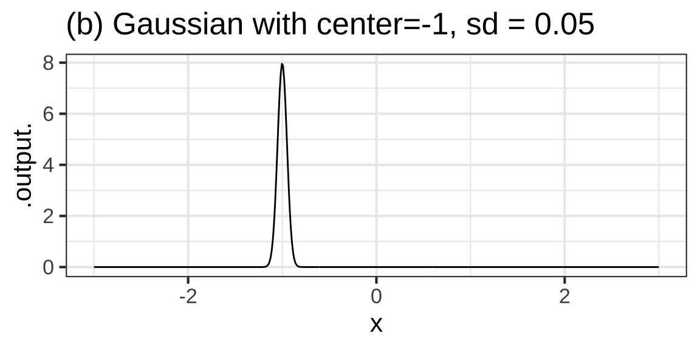
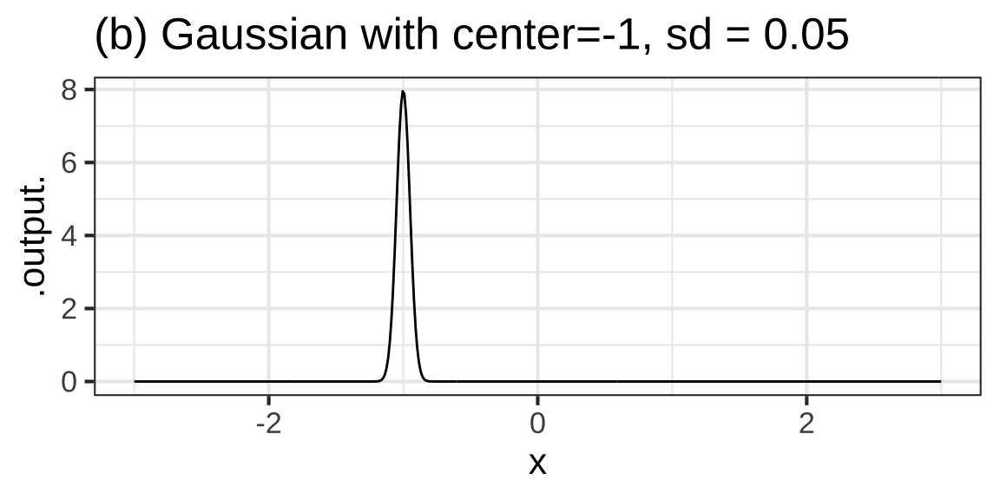

5 Modeling with functions
A central task in solving problems with mathematical modeling is the construction of appropriate functions to capture important features of the real-world situation you are working with. You’ve seen the notation that we’re going to use to describe functions to either the computer or the mathematical reader, and learned some of the terminology: function name, inputs, output, arguments, argument names, parameters, default values for parameters, algorithm, makeFun(), tilde expressions, and so on.
The next step in developing modeling skills is to acquaint yourself with a set of basic modeling functions that provide important building blocks for the functions you will construct in your mathematical modeling work. Drawing on the collective experience of the mathematical modeling community, we have identified a small set of specific function families which address a large set of the most common modeling situations.
The next several sections are like the displays in a hardware store. The display consists of a large number of collections of bins. Each collection consists of a single type of hardware, for instance, a washer. There are many collections because there are many kinds of hardware: bolts, wood screws, metal screws, nuts, washers, gaskets, etc. Typically, each collection involves a large number of bins containing different sizes or materials of the hardware item.
 Display racks of fasteners and other hardware.](www/hardware-display.jpg)
Figure 5.1: Source Display racks of fasteners and other hardware.
The function families you will study correspond to different kinds of hardware. We’ll need just a few—nails, screws, bolts, washers, nuts—enough to get you started on the common tasks. We call them a families of functions because most of them involve parameters, analogous to the different size of the hardware item. Depending on what field you work in, you may find yourself needing specialized functions: a “nut” is not enough, you will need to distinguish between wing nuts, wire nuts, cap nuts, flange nuts, tee nuts. (If you’re interested to see what a hardward store for mathematical functions looks like, explore the Digital Library of Mathematical Functions maintained by the US National Institute of Standards and Technology.)
Here’s a list of what we are calling the basic modeling functions. Other authors might exclude one or two or include an alternate, but this list will serve you well.
- Linear function
- Exponential function
- Power-law function
- Logarithm
- Sinusoid
- Sigmoid
- Hump
For each function in this list, you’re going to see the traditional mathematical name (if there is one), the parameter(s) used in the functions, the graphical “shape” of the function, and one or more common settings where the function is used. When appropriate, we’ll also see how to choose values for the parameters in order to match data as closely as possible.
Each of these function takes a single input, which we’ll generally name \(x\) or \(t\). We’ll use names for the parameters that are more or less standard in the literature
While we’re making the list, we’ll add two functions that appear in often in combination with the above but which are so modest that people don’t always notice them. By naming them, we’ll be able to point out the roles they play.
- The constant function
- The proportionality function
5.1 The straight-line family
i. (Fun-1C-a) *Review (from previous math classes) the parameters of the straight-line function: y-intercept and slope.*
ii. (Fun-1C-b) *Use a straight-line function in a modeling context.*
iii. (Fun-1C-c) *Spot discrepancies of data from a straight-line model.*
iv. (Fun-1C-d) *Construct a hock-stick function by piecewise combination of a constant function and a straight-line function with non-zero slope.*We’ll start with a simple function that appears throughout calculus and mathematical modeling. You probably have heard this function called a “linear function,” but we prefer to call it a “straight-line” function since its graph is a straight line. (Aside for the mathematically experienced: Strictly speaking, what’s called the linear function does not have the technical property of linearity, which in mathematics means something subtly different than “straight line.” We’ll need the mathematical property of linearity later in CalcZ.)
Let’s define a function \(g()\) which is a straight-line function: \[g(x) \equiv m x + b\] You likely have worked a lot with this kind of function in your previous math courses. If so, recall that there are two parameters, \(m\) and \(b\) called the slope and y-intercept respectively.
The straight-line function might be thought of as the default modeling function. If you want to describe a relationship between two quantities, using the straight-line function can often be just what’s required.
In using calculus, we’ll often be zooming in on a function over a tiny domain. Just about any function, when looked at over a tiny domain, is approximately a straight-line function.
To illustrate, consider the data plotted below recording monthly household natural gas use for the author’s family. This varies from month to month, and since gas is mainly used for heating the house, it’s reasonable to think that gas usage is related to the outdoor temperature. Each dot in the graph shows one month’s data, with temperature measured in degrees F and natural gas measured by volume: cubic feet appreviated ccf. A straight-line function has been fitted to the data.

The graph has several features that are not unusual when using data to construct a mathematical model.
The function selected, which gives ccf versus outdoor temperature, is roughly centered on the cloud of data. That is, for a given input value, the function output goes through the vertical center of the data points near that input value.
For part of the domain, the function is a good match to the data.
For another part of the domain, temperatures above about 60 degrees, the function deviates systematically from the data. Indeed, the output of the function is negative when temperature is above the mid 60s. (Of course, the amount of natural gas used can hardly be negative!)
There are a few data points, near 40 and 60 deg. F that are far from the output of the model at those temperature. Such points are called outliers. One of the uses of mathematical models in interpreting data is to make it easier to spot data records that don’t fit an overall pattern. (From the graph itself, one can only speculate about what might be responsible for the outliers. Here it seems to be an error in transcribing the data.)
The straight-line function has two parameters: the slope and the intercept. Since the domain of the graph includes 0, we can read the intercept directly from the graph: at an input of 0 the function output is roughly 300 ccf.
The slope is, famously, the “rise over run.” Mark off a convenient interval on the domain. We’ll use 0 to 64 degrees. Then find the vertical interval of the function output over that interval on the domain. We selected 0 to 64 for the domain since the function output is easy to read: about 300 ccf at 0 deg and 0 ccf at 64 degrees. The amount of “rise” is therefore \(0-300\) ccf and the run is \(64 - 0\) deg, so the slope is \[\frac{0-300}{64-0} \frac{\text{ccf}}{\text{deg}} \approx -4.6 \frac{\text{ccf}}{\text{deg}}\] The negative sign on the slope indicates that the function output falls as the input increases.
For a straight-line function, you will find the same slope whatever non-zero interval on the domain you choose for the run. Many other kinds of functions have a slope that differs for different inputs. One of the central ideas of calculus is that even for non-straight-line functions, a meaningful calculation of the slope at a single input can be constructed. We’ll examine that issue carefully later in the course.
In calculus, the slope of a function is a quantity of particular interest. Here, the slope tells us that a one degree increase in outdoor temperature (averaged over a month) corresponds to a 4.6 ccf decrease in natural gas use.
As you’ll see later in the course, the slope of a function is the sensitivity of the output to a change in the input.
It’s often the case that a given model accounts for only part of the pattern seen in data. There are many synonyms for “accounts”: “captures only part of the pattern,” “matches only part of the pattern,” and so on. The blue straight-line model in Figure ?? doesn’t account for the leveling out of natural gas use for temperatures greater than about 60 degrees.
Modelers look for such discrepancies between a candidate model (here, the blue line) and the data. Sometimes such discrepancies indicate that the wrong kind of mathematical function has been selected for the model or that the model has not been fitted to the data properly. A skilled modeler will treat the discrepancies as an opportunity to learn more about the real-world system being modeled. With this additional knowledge, a better model can be constructed.
Those familiar with home heating will know that for temperatures about about 60 degrees F, no heating is necessary and fuel use for heating falls to zero. But there are other uses for fuel such as cooking and water heating. To judge from the data, those uses don’t depend in any strong or obvious way on outdoor temperature.
Exercise: Compare the straight-line model fitted to all the ccf data to the model fitted to data where the temperature was less than 60 degrees. Implement as heating_ccf(temp)
Exercise: Make a straight-line model for the energy used for cooking and heating. Implement as other_ccf(temp)
Exercise: Piece together the two models to make a more comprehensive model of energy use. Show the computer implementation of this function.
all_ccf <- makeFun(
ifelse(temp < 60,
heating_ccf(temp) + other_ccf(temp),
other_ccf(temp)) ~ temp)5.2 The exponential family
Objective (Fun-2a) Recognize the key characteristics of an exponential function’s graph, to include both increasing and decreasing exponential functions
Additional objective (not numbered) Use correctly statements like, “the slope of the function \(g(x)\) with respect to \(x\) is a function of \(x\).”
An important concept in calculus is the change in output of a function for a given change in input. The experiment to measure a change in output is very simple:
- Start with some fixed value for the input \(x_0\) and record the function output \(f(x_0)\).
- Change the input by an amount \(h\) and record the function output \(f(x_0 + h)\).
- The change in input is \(h\), the corresponding change in output is \(f(x_0 + h) - f(x_0)\).
You can choose whatever value for the change in input \(h\) is convenient. Often, the choice is “one unit of input.” Obviously, this depends on how you quantify the input. For instance, in Figure ??, where we looked at natural gas usage (ccf) as a function of average monthly temperature (deg. F), a unit of input is 1 degree F.
The change in output divided by the change in input is, as you know, the slope of the function. For a straight-line function in Figure ?? the slope is \(-4.6 \frac{\text{ccf}}{\text{deg}}\). “Slope” is a nice physical metaphor, but talking about the “slope of gas use” is bound to be confusing. People who are familiar with calculus use the word “derivative,” as in “derivative of gas use with respect to temperature.” For a straight-line function, the “derivative” is constant, that is, it doesn’t change with \(x_0\).
The exponential function is our first basic modeling function family with a non-constant derivative. Figure ?? shows the function \(f(x) \equiv e^{x}\).

For use in modeling, we generally have to pick the right “shape” from the exponential family. We’ll generally write the exponential function with a parameter \(k\) and the formula \(e^{kt}\).
Figure ?? shows exponential functions with several different numerical values for the parameter \(k\).
 Some features of the members of the exponential family \(g(x) \equiv e^{kx}\):
Some features of the members of the exponential family \(g(x) \equiv e^{kx}\):
- When \(k > 0\) the function output increases with \(x\). But when \(k < 0\) the function output decreases as \(x\) gets bigger.
- For any \(k\), the value of \(g(0) = 1\).
- When \(k > 0\), the value of \(g(x)\) becomes very small when \(x\) is negative but large (that is, to the left). When \(k < 0\), the value \(g(x)\) becomes very small when \(x\) is positive and large. A way to say this in symbols is that, for negative \(k\), the limit as \(x \rightarrow \infty\) is zero. Similarly, for positive \(k\), the limit \(x \rightarrow -\infty\) is zero. We use the word asymptotic to denote such limits.
Notice that as the value of \(g(x) \rightarrow 0\) the function gets flatter. That is, as \(g(x) \rightarrow 0\), the slope of \(g(x)\) also goes to zero. And when \(g(x)\) is large, the slope is also large and either positive or negative depending on \(k\).
Objective (Fun-2b) Know that exponential functions have the property that their slope (rate of change) at each input is proportional to the height of the function at that same input. And that the slopes approach zero in one of the directions
Look back at Figure ??.
Clearly the slope of each of the functions is different for different values of the input \(x\). Better to say this using function language: The slope of the exponential function \(f(x)\) is itself a function of \(x\).
With this sort of language in mind, we can return to the description of the slope of a straight-line function and say any of these: “the slope of the straight line function \(g(x) \equiv m x + b\) is not a function of \(x\)” or “the slope of \(g(x)\) is constant with respect to \(x\),” or “the slope of \(g(x)\) is a constant function with respect to \(x\). A”constant function" is one whose output does not depend on the input, for instance \(\text{const}(x) = 7\). (In terms of an office building, a constant function is a building where the worker at every door gives exactly the same response, here 7.)
You can see from Figure ?? that the slope of the exponential function is positive and gets bigger as \(x\) gets bigger.
You could draw lots of functions whose slope is an increasing function of its input. But there’s something very special about the exponential function that gives it a high status among the basic modeling functions:
The slope of the exponential function is alway proportional to the value of the exponential function.
It’s worth unpacking that simple statement a bit. We have an exponential function \(g(x) \equiv e^x\). The slope of the exponential function is, as we have described, \[\text{slope of}\ g(x)\ \mbox{is} \ \frac{e^{x + h} - e^x}{h} = \frac{e^x e^h - e^x }{h} = e^x \frac{e^h - 1}{h}\] Look carefully at the term \((e^h - 1)/h\). Notice that there is no \(x\) in it. Thus, the function \((e^h - 1)/h\) is constant with respect to \(x\). In other words \[\text{slope of}\ g(x)\ \mbox{is} \ \mbox{constant} \times e^x\].
EXERCISE: Compute \((e^h - 1)/h\) for \(h=2, 1, .1, .01, .001\). Describe what happens. (We might write, “As \(h \rightarrow 0\), the quantity \(\frac{e^h - 1}{h} \rightarrow 1\).”)
The exponential function is particularly useful when the quantity we want to model shows constant proportional increase. Many quantities in everyday life are this way. For instance, if you get an increase in salary you typically say something like “a 3% increase.” The population growth of a country is often presented as “percent per year.” Inflation in the price of goods is similarly described in percent per year. Interest on money in a bank savings account is also described as percent per year. But if you have the bad fortune to owe money to a loan shark, the proportional increase might be described as “percent per month” or “percent per week.”
EXERCISE: Go back to Figure ?? and calculate the percent increase in the output of \(g(x)\) when \(x\) is increased by one unit. LEAD THEM THROUGH DOING THIS FROM x=0 to 1, and then for other starting points.
Objective (Fun-2c) Know how changing the values of C and k affect the properties of the exponential model \(g(x) \equiv C e^{kt}\) (table page 62)
Objective Revised (Fun-2c) Understand that \(e^{kt}\), \(2^{k_2 t}\), and \(10^{k_{10} t}\) are all the same function, when \(k = k_2 \ln(2) = k_{10} \ln(10)\). Relate \(k_2\) to the doubling time and \(k_{10}\) to the time to increase 10-fold.
Write CONTENT FOR Fun-2c
5.3 Power-law family
Objectives:
- (Fun-2d) Distinguish between exponential functions and power-law functions.
- (Fun-2e) Relate power-law functions to physical quantities.
Exponential functions such as \(f(t) \equiv e^{kt}\) or \(f_2(t) \equiv 2^{k_2 t}\) and \(f_{10}(t) \equiv 10^{k_{10} t}\) (all of which can be arranged to produce exactly the same output for corresponding values of \(k\), \(k_2\), and \(k_{10}\)) can be remembered as such because the function input appears as an exponent in the function formula.
There is a very different kind of function, called a power-law function, which is different from an exponential, and has different uses, yet is very often confused. In a power-law function, the input is being raised to a power, for example, \(g(t) \equiv t^2\). The exponent is a parameter and the input is being raised to the indicated power, for instance 2 for \(g(t)\).
Figure ?? shows a few members of the power-law family with different exponents, both positive and negative. For contrast, one exponential function is also drawn (in green).

As you can see, the shapes of power-law functions can be very different depending on the value of the exponent parameter. For many values of the exponent parameter, the function domain is \(-\infty < t < \infty\) while for others the domain is just the positive numbers: \(0 < t < \infty\). None of them resemble an exponential function.
What do all these differently shaped functions have in common that warrants them all being placed in the same family? Of course, they all involve raising the function input to a power: positive or negative, integer or otherwise (e.g. 1.5). The main thing they have in common is the settings they are used in.
You have been using power-law functions from early in your math and science education. Some examples:
| Setting | Function formula | exponent |
|---|---|---|
| Circumference of a circle | \(C(r) = 2 \pi r\) | 1 |
| Area of a circle | \(A(r) = \pi r^2\) | 2 |
| Volume of a sphere | \(V(r) = \frac{4}{3} \pi r^3\) | 3 |
| Distance traveled by a falling object | \(d(t) = \frac{1}{2} g t^2\) | 2 |
| Gas pressure versus volume | \(P(V) = \frac{n R T}{V}\) | \(-1\) |
| … perhaps less familiar … | ||
| Distance traveled by a diffusing gas | \(X(t) = D \sqrt{ \strut t}\) | \(1/2\) |
| Animal lifespan (in the wild) versus body mass | $L(M) = a M^{0.25} | 0.25 |
| Blood flow versus body mass | \(F(M) = b M^{0.75}\) | 0.75 |
The reason why power-law functions have their important role in science have to do with the logic of physical quantities such as length, mass, time, area, volume, force, power, and so on. We’ll discuss this at length later in the course and the principles will appear throughout calculus.
SHOW SOME ALLOMETRIC GRAPH
5.4 Logarithm and magnitude
Objective (Fun-3a1) Understand a logarithm (base-10) as signifying the magnitude of a number by the digit count. See \(\log_2()\) and \(\log_{10}()\) as counting digits in base-2 and -10 respectively.
Let’s talk about logs. For many students, logarithms are the breaking point in their mathematical studies. I’ve encountered well educated professionals who are evidently afraid of logarithms and take the word itself as a promise that what’s coming will be hard to understand. I suspect that some of this comes from being introduced to logarithms as a means of dealing algebraically with power-law and exponential functions.
If logarithms are a source of anxiety because of their association with algebra and concerns about what use they could otherwise be for, take a step back, close your eyes, and we’ll start over, but more gently.
Undoubtedly you are comfortable with the standard way of writing numbers, for instance 33 or 512 or 1051. Elementary school students master the comparison of such numbers to one another. Which is greater: 512 or 33? Which is less, 1051 or 512? You can answer such questions at a glance because the comparison here can be accomplished simply by counting the number of digits. 1051 has four digits, so it is larger than the three-digit number 512. There are two digits in 33, so it smaller than 512. When two numerals have the same number of digits—say, 337 and 512—you can’t answer the “greater than” question by simple counting. Instead, you proceed from left to write and compare the number in each place. So, for 512 and 337, you compare 5 to 3 and … since 5 is greater than 3, 512 is greater than 337. If the two leading digits are the same, go on to the next digit and so on for all the digits in turn.
Things were not always this simple. Our number system that uses place and Arabic numerals is a human invention. An example of an earlier number system is Roman numerals. Here, comparison is hard. For instance, which of these three numbers is bigger?
\[\mbox{MLI or CXII or XXXIII}\] The typographically shorter number is the largest, and vice versa. Even when two Roman numerals have the same length, it’s not trivial to compare them on a place-by-place basis. For instance, IC is about fifteen times bigger than VI, even though I is much smaller than V.
Digit counting provides an easy, fast way to perform many calculations, at least approximately. What is \(\sqrt{10000}\)? There are five digits, and the square root of a number will have “half the number of digits.” So, \(\sqrt{10000} = 100\). What is \(10 \times 34\)? Easy: 340. Just append the one zero from 10 to the end of 34. What is \(1000 \times 13\)? Just as easy: 13,000. We even punctuate written numbers with commas and a period in order to facilitate counting digits.
Imagine having a digit counting function called digit(). It takes a number as input and produces a number as output. We don’t have a formula for digit(), but for some inputs the output can be calculated just be counting. For example:
- digit(10) \(\equiv\) 1
- digit(100) \(\equiv\) 2
- digit(1000) \(\equiv\) 3
- … and so on …
- digit(1,000,000) \(\equiv\) 6
- … and on.
The digit() function easily can be applied to the product of two numbers. For instance:
- digit(1000 \(\times\) 100) = digit(1000) + digit(100) = 3 + 2 = 5.
Similarly, applying digit() to a ratio gives the difference of the digits of the numerator and denominator, like this:
- digit(1,000,000 \(\div\) 100) = digit(1,000,000) - digit(100) = 6 - 2 = 4
For an input \(x\) consisting of a 1 followed by zeros, any fool can calculate the output: just count the zeros. But for other numbers, it’s not so easy.
The people who originally proposed the crazy-sounding notion that digit() can be applied to numbers like 32 were wild innovators of the late 16th and early 17th centuries, but they had ideas about how to do the calculation. Some examples:
- 32 \(\times\) 32 1000.
- So, digit(32 32) digit(1000) = 3$.
- Applying the multiplication rule means digit(32) + digit(32) \(\approx\) 3, so digit(32) \(\approx\) 1.5.
-
\(32 = 2 \times 2 \times 2 \times 2 \times 2\)
- Since digit(32) \(\approx\) 1.5, we know that 1.5 5 \(\times\) digit(2) which tells us that digit(2) \(\approx\) 0.3.
It’s hard to do such calculations in your head, but fortunately the arithmetic whizzes who invented digit() could handle it and made tables giving the output of digit(\(x\)) for many different values of \(x\). Here’s part of the first page of the first widely published table, in 1617. The project was supervised by Henry Briggs. (1561-1630)

The table was called the Chilias prima, Latin for “First group of one thousand.” True to its name, the table gives the output of digits() for the inputs 1, 2, 3, …, 998, 999, 1000. For instance, as you can see from the top row of the right-most column, digits(67) = 1.82607480270082.
In everyday speech, 67 has two digits. The authors of Chilias prima sensibly didn’t use the name “digit()” for the function. They chose something more abstract: “logarithm()”. Nowadays, this function is named \(\log_{10}()\). In R, the function is called log10().
log10(67)## [1] 1.826075Our main use for \(\log_{10}()\)/log10() will be to count digits in order to quickly compare the magnitude of numbers. The difference digits(\(x\)) - digits(\(y\)) tells how many factors of 10 separate the magnitude of the \(x\) and \(y\).
Another important logarithmic/digit-counting function is \(\log_2()\), written log2() in R. This counts how many *binary digits are in a number. For us, \(\log_2(x)\) tells how many times we need to double, starting at 1, in order to reach \(x\). For instance, \(\log_2(67) = 6.06609\), which indicates that \(67 = 2\times 2 \times 2 \times 2 \times 2 \times 2 \times 2^{0.06609}\)
\(\log_2(x)\) and \(\log_{10}(x)\) are proportional to one another. One way to think of this is that they both count “digits” but report the results in different units, much as you might report a temperature in either Celsius or Fahrenheit. For \(\log_2(x)\) the units of output are in bits. For \(\log_{10}(x)\) the output is in decades.
A third version of the logarithm function is called the natural logarithm and is denoted \(\ln()\) in math notation and simply log() in R. We’ll need additional calculus concepts before we can understand what justifies calling \(\ln()\) “natural.”
EXERCISE: Compute \(10^y\) to convert a “number of digits” into the number whose digits are being counted. For instance, \(10^2.5\) is 316.228.
EXERCISE: How many binary digits in 64? in 127?
EXERCISE: \(\log_{10}(x)\) and \(\log_2(x)\) are proportional to one another. What’s the constant of proportionality?
POSSIBLE COMPUTATIONAL ENRICHMENT: AN EXAMPLE OF A FUNCTION DESCRIBED AS A COMBINATION OF A FORMULA AND A COMPUTER ALGORITHM
small_log <- function(x) {
if (x < .99 || x > 1.01) stop("x must be in range 0.99 to 1.01.")
x <- x - 1
(x - x^2/2 + x^3/3 - x^4/4 + x^5/5 - x^6/6 + x^7/7)/2.30258509299405
}
my_log <- function(x) {
if (x >= 10) my_log(x/10) + 1
else if (x < 0.1) my_log(10*x) - 1
else if (x > 0.99 && x < 1.01) small_log(x)
else 2*my_log(sqrt(x))
}5.5 Sinusoid family
Objective (Fun-3B-a) Become familiar with the sinusoid functions and the period parameter. Be able to identify the period from the graph of a sinusoid-like function.
Onward to our next basic modeling function: the sinusoid. The word “sinusoid” may bring to mind your studies of trigonometry. As you know, “trigonometry” is the study and measurement of triangles, that is, polygons with three sides. Admittedly, the word “trigon” does not bring to mind a triangle as well as the words “pentagon,” “hexagon,” and “octagon” are associated with 5-, 6-, and 8-sided polygons.
Trigonometry is a standard part of the high-school mathematics curriculum, so I’m going to assume that you know the names of various trigonometric functions, e.g. \(\sin()\), \(\cos()\), \(\tan()\), and a host of others that have names that are easily confused or forgotten.
Trigonometry has always been an important mathematical topic because of its use in surveying (George Washington was a trained surveyor), navigation, building and design, and other trades. It is still well worthwhile for any technical worker to master the use of trigonometry. But this is not why it’s coming up here in CalcZ.
Including the sinusoid in our small set of basic modeling functions has nothing to do with triangles or the many practical applications of trigonometry. Instead, we need it as a standard model for a highly important phenomena: things that repeat themselves in a cycle, over and over again. We use the word “sinusoid” rather than, say “sine” because there are two closely related functions, \(\sin()\) and \(\cos()\) that are more or less interchangeable when it comes to modeling. For now, we could do with just one or the other. Later in CalcZ, however, it will be useful to have them both for the purposes of keeping track of some mathematical operations. Also, we will not generally have a use directly for a function \(\sin(t)\). Instead, we’ll work with a parameterized function \(\mbox{sinusoid}(t) \equiv \sin(2\pi t/P)\), where \(P\) is called the “period” of the function. Figure ?? shows the graph of a sinusoid with \(P=1\) and another with \(P=0.3\)


The graphs show the same graphic domain: \(-2 < t < 2\). (The mathematical domain, that is, the set of valid inputs, is \(-\infty < t < \infty\). For the sinusoid of period \(P=1\), four cycles are fitting in to the graphic domain we selected. For the sinusoid of period \(P=0.3\), a little more than 12 cycles fit into the graphic domain. A cycle is the function over a part of the domain where the function starts at a particular value (say, sinusoid(t) = 0) and first returns back to its staring value and to its starting slope.
You can choose any starting value you like to define a cycle. For the purposes of measuring the period from a graph, I find it convenient to start at the peak, that is, somewhere that \(\mbox{sinusoid}(t) = 1\) or the trough (that is, \(\mbox{sinusoid}(t) = 1\)). No matter what you choose, you will get the same answer.
Examples of real-world phenomena that are roughly sinusoidal: the temperature at any location on Earth which has a period of 1 year; the brightness of the Moon which has a period of about 27.322 days; the position on a beach of the sort of bird that runs away from breaking waves and toward retreating waves (period: several seconds); any other kind of wave including radio wave. (The period of a radio wave depends on the “band,” for FM radio it’s roughly one one-hundred millionth of a second. For WIFI waves have a period of roughly a quarter of a billionth of a second, so about 40 times shorter than FM radio waves). Of course, the phenomena we model with sinusoids are not generally exactly periodic. The moon and the weather are pretty reliable, but breaking wave don’t always come in exact rhythm. A radio wave that is exactly periodic is called a “carrier,” but the transmission of information—sound, movies, documents, etc.—necessarily involves some deviation from exact periodicity. Still, a sinusoid is a pretty good place to start modeling even those phenomena that are not exactly periodic.
Notice that in the above we’re using \(t\) for the name of the input to the sinusoid. Of course, we could use any name at all for the input. We’re prompted to use \(t\) rather than our usual \(x\) because one of the most important uses for sinusoids is in modeling functions that repeat in time over and over again. It’s entirely your choice how
The domain of \(\mbox{sinusoid}(t)\) is the entire number line. The range is the interval from -1 to 1, and the ink in a sinusoid graph is balanced on either side of zero.
A more general parameterization of a sinusoid is \(\sin(2\pi(t-t_0)/P)\). \(P\) is still the period and \(t_0\) is a specific input at which the output is increasing from 0. Often, this richer parameterization is written somewhat differently: \(\sin(2\pi(t-t_0)/P) = \sin(2\pi t/P - 2\pi t_0/P) = \sin(\frac{2\pi t}{P} - \phi)\). The parameter \(\phi\) is called the phase. For us in CalcZ, we will mostly be concerned with the period parameter and you won’t see the phase appearing often.
5.6 Humps and sigmoids
Objectives
- (Fun-3B-a) Recognize general graphical features of sigmoidal functions and their associated hump functions
- (Fun-3B-b) Explain why the slope function of a sigmoidal function is a hump function
- (Fun-3B-c) OPTIONAL Be aware of different formulations for the hump sigmoidal functions.
Our last two basic modeling functions express an important idea in modeling: localness. To put this in concrete terms, imagine creating a function to depict the elevation above sea level of a long road as a function of distance in miles, \(x\), from the start of the road. If the road were level at 1200 feet elevation, a sensible model would be \(\mbox{elevation}(x) = 1200 \text{ft}\). If the road were gently sloping, a better model would be \(\mbox{elevation}(x) = 1200 + 3 x\).
Now let’s add a bump to the road. A bump is a local feature, often only a few feet wide. Or, perhaps the road is crossing a mountain range. That’s also a local feature, but unlike a bump in the road a mountain range extends for many miles.
The basic modeling function suited to represent bumps in the road, or potholes, or mountain ranges is called a hump function.
A hump function has two parameters: the location of the hump, which we’ll call the center parameter, and the extent of the hump, which we’ll call the spread. Figure ?? shows a few hump functions with different parameters.
 

It’s easy to read off the center parameter from a graph of a hump. It’s the location of the top of the hump. (We mentioned before that a mathematical word for “the location of the top” is argmax; the value for the input of the function that produces the maximum output.)
The spread parameter is also pretty straightforward, but you first have to become familiar with an unusual feature of the hump function. The output of the hump function far from the center is practically zero. But it is not exactly zero. You can see from the graphs that the hump function has long flanks which approach zero output more or less in the manner of an exponential function. This means that we can’t measure the spread of the hump function by the distance between the zeros on either side of the peak. Instead, we need a convention that will allow us to be precise in quantifying what is admittedly a vague concept of width.
A simple convention is that the spread is the “half-width at half-height.” Come down half-way from the peak of the hump. Panel (c) of Figure ?? marks that elevation with a thin, red, horizontal line. Along that line, measure the width of the hump, as marked by the thick red line in Panel (c). The spread parameter is half the width of the hump measured in this way.
If you have a keen eye, you’ll notice that the red line is not exactly half-way down from the peak. It’s down 39.35% from the peak. The official definition of width of a hump is not actually half-width at half-height, but that simple formulation will do for us for the present.
Another seeming oddity about the hump function is the value of the maximum. It would have seemed natural to define this as 1, so-called “unit height.” The way it actually works is different: the maximum height is set so that the area under the hump function is 1.
This business with the area will make more sense when you’ve learned some calculus tools, specifically “differentation” and “integration.” For now though …
Consider another road feature, a local change from one elevation to another as you might accomplish with a ramp. The basic modeling function corresponding to a local change from one level to another is the sigmoid function. Figure ?? shows three sigmoid functions.


 The name “sigmoid” comes from vague resemblance of the graph to the letter S (which is “sigma” in Greek: ς).
The name “sigmoid” comes from vague resemblance of the graph to the letter S (which is “sigma” in Greek: ς).
The parameters of the sigmoid function are the same as for the hump function: center and width. The center is easy to estimate from a graph. It’s the value of the input that produces an output of 0.5, half-way between the max and min of the sigmoid. As with the hump function, the width is measured according to a convention. The width is the change in input needed to go from an output of 0.5 to an output of 0.8413. This use of 0.8413 must seem luny at first exposure, but there is a reason. We’ll need more calculus tools before it can make sense.
Hump functions and sigmoid functions with the same center and width parameters have a very close relationship. The slope of the sigmoid function is the corresponding hump function. Figures ?? and ?? show corresponding hump and sigmoid functions. To the very far left, the sigmoid function is effectively flat: a slope near zero. Moving toward the center the sigmoid has a gentle slope: a low number. In the center, the sigmoid is steepest: a higher number. Then the slope of the sigmoid becomes gentle again before gradually falling off to zero. Near zero, then low, then higher, then low again, then falling off to zero: that’s also the description of a hump function!
In R, the name of the sigmoid function is pnorm(). The hump is dnorm(). The parameters that specify center and spread are named mean and sd. The word “mean” accurately conveys the idea of “center.” It would be nice to be able to say that sd comes from spread, but in fact sd is short for “standard deviation.”
Unlike the celebrity functions like exponentials, logarithms, power-laws, and sinusoids, there is not universal agreement across technical fields what should be the precise definition of a hump or sigmoid function. Figure ?? compares two widely used versions of the hump and sigmoidal functions.


The sigmoidal logistic function (drawn in red in Figure ??) is a favorite among mathematicians. Its formula is \[\mbox{sigmoid}_\mbox{logistic}(x) \equiv \frac{1}{1 + e^{-k(t-t_0)}}\] The parameter \(t_0\) is the center. The spread (as we defined it earlier along the lines of half-width at half-height) is roughly \(1.5/k\).
Since the hump function is the slope of the sigmoid function, the formula for \(\mbox{sigmoid}_\mbox{logistic}(x)\) gives directly the hump’s formula: \[\mbox{hump}_\mbox{logistic}(x) \equiv \frac{k e^{-k(t-t_0)}}{(1 + e^{-k(t-t_0)})^2}\] The Gaussian function (drawn in blue) is much more widely used in science and statistics. It’s formula is \[\mbox{hump}_\mbox{gaussian}(x) \equiv {\small \frac{1}{\sqrt{2\pi \sigma^2}}} e^{\frac{(t - t_0)^2}{2 \sigma^2}}\] As you can see from Figure ??, the logistic and the gaussian formulations are very similar. For many modeling purposes, either one would do. The important features are that the functions are smooth with gentle curves, the sigmoid rises from 0 to 1 in output, and the area under the hump is 1.
An amazing bit of trivial is that there is no formula for \(\mbox{sigmoid}_\mbox{gaussian}()\).
You might ask, “If there is no formula, how can we use the function?” The answer is that even though there is no formula, there is an algorithm for calculating the value of \(\mbox{sigmoid}_\mbox{gaussian}(t)\). We’re now starting to get into the center of the realm of calculus, which provides us new concepts and notation for describing the correspondance between functions. We’ll need much of CalcZ to introduce and master these concepts and their notation. For now, we will let the notation make a cameo appearance, a premonition of what is to come.
To say, “the slope of the sigmoid function is the hump function,” we write \[\partial_t \mbox{sigmoid}(t) = \mbox{hump}(t)\]
To describe an algorithm for computing the output of the sigmoid function, we need somehow to move the \(\partial_t\) from the left side of the equation to the right side. This is a subtle operation and is conventionally written \[\mbox{sigmoid}(t) = \int_{-\infty}^t \mbox{hump}(x) dx\]
If you haven’t studied calculus before, \(\partial_t\) and \(\int\) will be new to you. You can hardly be expected at this point to understand them. But now you’ve seen them and will hopefully come to be friends with them.